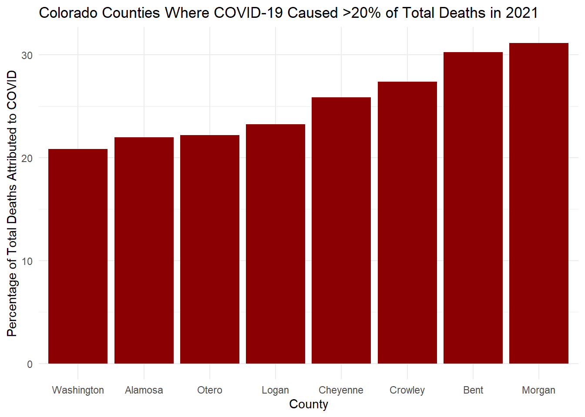
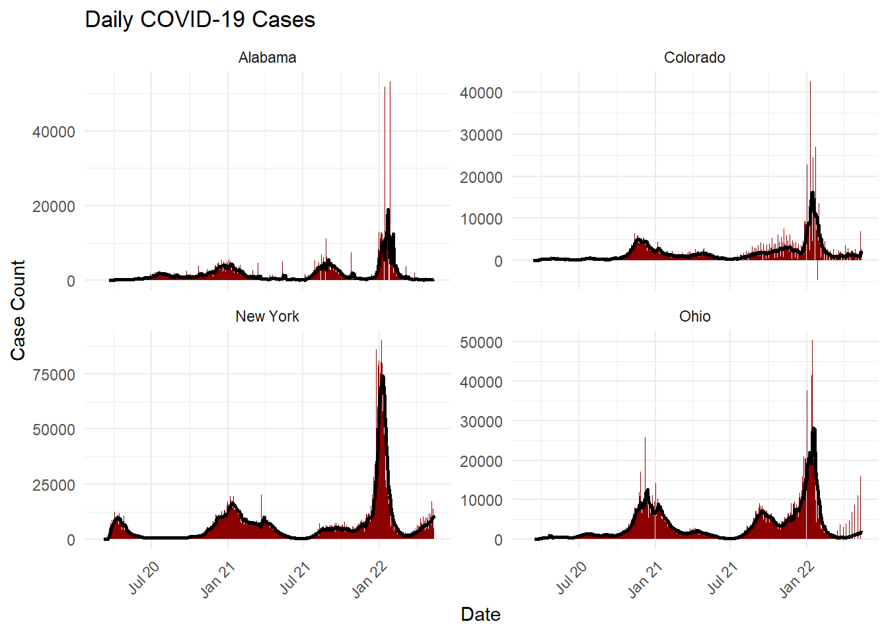
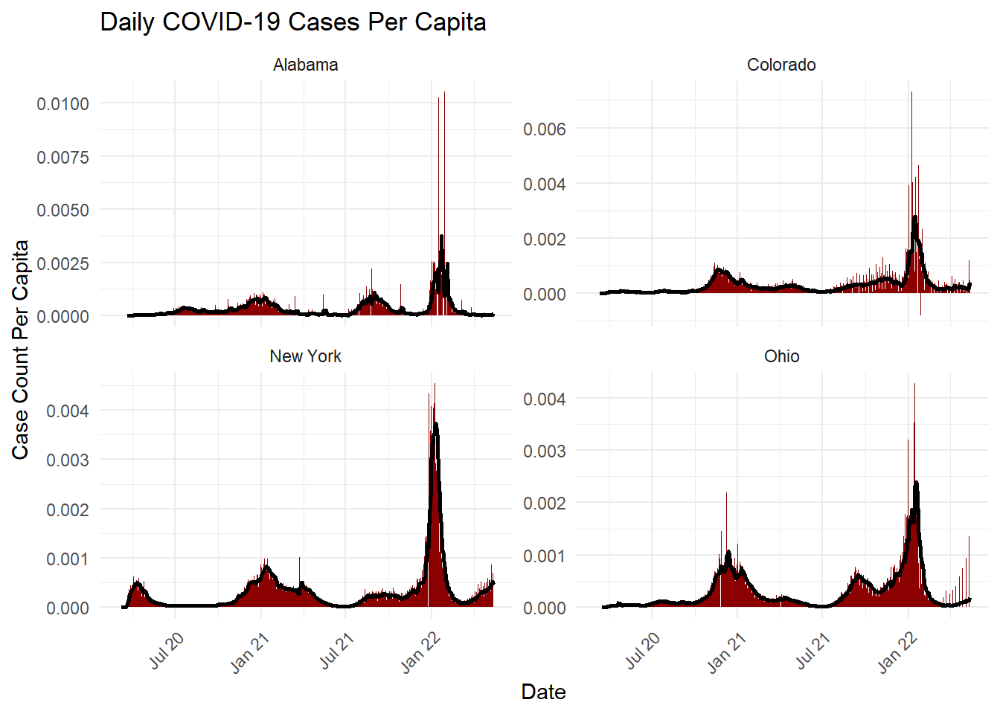
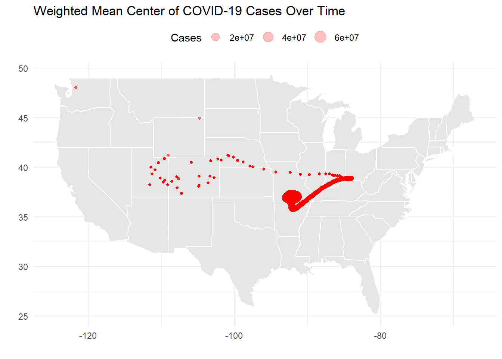

── Attaching core tidyverse packages ──────────────────────── tidyverse 2.0.0 ──
✔ dplyr 1.1.4 ✔ readr 2.1.5
✔ forcats 1.0.0 ✔ stringr 1.5.1
✔ ggplot2 3.5.1 ✔ tibble 3.2.1
✔ lubridate 1.9.4 ✔ tidyr 1.3.1
✔ purrr 1.0.2
── Conflicts ────────────────────────────────────────── tidyverse_conflicts() ──
✖ dplyr::filter() masks stats::filter()
✖ dplyr::lag() masks stats::lag()
ℹ Use the conflicted package (<http://conflicted.r-lib.org/>) to force all conflicts to become errors
library(flextable)
Attaching package: 'flextable'
The following object is masked from 'package:purrr':
compose
library(zoo)
Attaching package: 'zoo'
The following objects are masked from 'package:base':
as.Date, as.Date.numeric
library(maps)
Warning: package 'maps' was built under R version 4.4.3
Attaching package: 'maps'
The following object is masked from 'package:purrr':
map
library(patchwork) # For Q8
Warning: package 'patchwork' was built under R version 4.4.3
library(viridis) # For easier time-based spatial mapping coloring
Warning: package 'viridis' was built under R version 4.4.3
Loading required package: viridisLite
Attaching package: 'viridis'
The following object is masked from 'package:maps':
unemp
Question 1: Public Data
# Read in and store NY Times US county covid datacovid_url <-"https://raw.githubusercontent.com/nytimes/covid-19-data/master/us-counties.csv"us_covid_data <-read_csv(covid_url)
Rows: 2502832 Columns: 6
── Column specification ────────────────────────────────────────────────────────
Delimiter: ","
chr (3): county, state, fips
dbl (2): cases, deaths
date (1): date
ℹ Use `spec()` to retrieve the full column specification for this data.
ℹ Specify the column types or set `show_col_types = FALSE` to quiet this message.
# Read in and store US Census datacensus_url <-"https://www2.census.gov/programs-surveys/popest/datasets/2020-2023/counties/totals/co-est2023-alldata.csv"us_census <-read_csv(census_url)
Rows: 3195 Columns: 67
── Column specification ────────────────────────────────────────────────────────
Delimiter: ","
chr (5): SUMLEV, STATE, COUNTY, STNAME, CTYNAME
dbl (62): REGION, DIVISION, ESTIMATESBASE2020, POPESTIMATE2020, POPESTIMATE2...
ℹ Use `spec()` to retrieve the full column specification for this data.
ℹ Specify the column types or set `show_col_types = FALSE` to quiet this message.
# Check data structure to ensure it's loaded properly (remove the "#" on the line below to see output)#str(covid_data)#str(us_census)
Easily accessible, open source data provides the public with a means to hold the government, regulatory agencies and industry accountable. Historic data is particularly important for informing decisions in the present to avoid repeating historical mistakes. The present purge of information from numerous governmental websites is an excellent example of data loss benefiting a certain group at the detriment of those who wish to use previously collected data and established facts to contest ongoing changes. If you can’t point to data and show it exists than you don’t have a claim. If you don’t have a claim, you don’t have a cause. If you don’t have a cause, you have nothing to fight for and become aimless. Causes can exist on hope for a time but at some point the lact of data and mutually understood facts will lead to chaos and disorder.
Question 2: Daily Summary
# Define state and date for the analysisstate_name <-"Colorado"target_date_1 <-"2022-02-01"# Convert date column to Date typeus_covid_data$date <-as.Date(us_covid_data$date)# Create a subset limiting data to Colorado with new case and death information.co_covid_data <- us_covid_data %>%filter(state == state_name) %>%# Filter Colorado dataarrange(county, date) %>%# Collate data for each county and datemutate(new_cases = cases -lag(cases), # Create new column for new casesnew_deaths = deaths -lag(deaths)) # Create new column for new deaths# Create tables displaying the 5 counties with the highest cum/new cases.# Counties with the worst casesworst_cum_cases <- co_covid_data %>%filter(date == target_date_1) %>%slice_max(cases, n =5) %>%select(-state, -fips)#Counties with the worst deathsworst_new_cases <- co_covid_data %>%filter(date == target_date_1) %>%slice_max(new_cases, n =5) %>%select(-state, -fips)# Print worst cumulative cases tableflextable(worst_cum_cases) %>%set_header_labels(date ="Date",county ="County",cases ="Cumulative Cases",deaths ="Cumulative Deaths",new_cases ="New Cases",new_deaths ="New Deaths" ) %>%set_caption("Top 5 Colorado Counties for Cumulative Cases") %>%align(part ="all", align ="center")
Date
County
Cumulative Cases
Cumulative Deaths
New Cases
New Deaths
2022-02-01
El Paso
170,673
1,518
630
7
2022-02-01
Denver
159,022
1,194
389
9
2022-02-01
Arapahoe
144,255
1,172
401
0
2022-02-01
Adams
126,768
1,224
326
2
2022-02-01
Jefferson
113,240
1,219
291
7
#Print worst new cases tableflextable(worst_new_cases) %>%set_header_labels(date ="Date",county ="County",cases ="Cumulative Cases",deaths ="Cumulative Deaths",new_cases ="New Cases",new_deaths ="New Deaths" ) %>%set_caption("Top 5 Colorado Counties for New Cases") %>%align(part ="all", align ="center")
Date
County
Cumulative Cases
Cumulative Deaths
New Cases
New Deaths
2022-02-01
El Paso
170,673
1,518
630
7
2022-02-01
Arapahoe
144,255
1,172
401
0
2022-02-01
Denver
159,022
1,194
389
9
2022-02-01
Adams
126,768
1,224
326
2
2022-02-01
Jefferson
113,240
1,219
291
7
Question 3: Normalizing Data
#Refine US Census Dataus_census_formatted <- us_census %>%# Remove state level datafilter(COUNTY !="000") %>%# Reformat FIPS data from 2-3 to 5 digit combined strings.mutate(STATE =sprintf("%02d", as.numeric(STATE)), # Format state to 2 digitsCOUNTY =sprintf("%03d", as.numeric(COUNTY)), # Format county to 3 digitsfips =paste0(STATE, COUNTY) # Combine state and county codes to get full 5 digit FIPS code. )# Select 2021 dataus_census_2021 <- us_census_formatted %>%# Keep only columns with "NAME" or "2021" (or the FIP Column)select(contains("NAME"),contains("2021"), fips)
# Explore Census and CO COVID Datastr(us_census_2021)
The two data frames being explored are US Census and US COVID data. The Census data has not been processed much while the COVID data has been reduced to contain only the data essential to the lab. The COVID data is narrower but much longer in its current form whereas the census data is much wider but shorter. The census data has multiple years of typical census record data whiel the covid data spans certain dates during the peak of the pandemic. The “fips” header is shared with the same 5-digit fips identifier.
# Find range of CO pops in 2021# Filter for CO FIPS code (08)co_pop <- us_census %>%filter(STATE =="08", COUNTY !="000") %>%group_by(COUNTY)# Calculate population range in CO in 2021co_pop_range <-range(co_pop$`POPESTIMATE2021`, na.rm =TRUE)#Print colorado pop rangecat("Range of populations in Colorado counties in 2021:", co_pop_range)
Range of populations in Colorado counties in 2021: 741 737287
In 2021 Colorado’s least populous county had 741 permanent residents and the most populous county had 737,287 permanent residents.
# Join US Census data with CO covid data for 2021co_combined <- co_covid_data %>%left_join(us_census_2021, by ="fips") %>%# Rename US Census Headersrename(pop_2021 = POPESTIMATE2021,births_2021 = BIRTHS2021,deaths_2021 = DEATHS2021 ) %>%# Calculate per capita (pc) statisticsmutate(pc_cum_cases = cases / pop_2021, # cumulative cases per capitapc_cum_deaths = deaths / pop_2021, # cumulative deaths per capitapc_new_cases = new_cases / pop_2021, # new cases per capitapc_new_deaths = new_deaths / pop_2021, # new deaths per capita ) %>%select(1:8, 11, 13:14, 27:30)# Narrow df to further remove superfluous columns from census dataco_combined_abbr <- co_combined %>%select(-births_2021, -deaths_2021)# Generate tables (2) for the 5 counties with highest cumulative and new cases par capita for a target date.# Set new target date (if desired)target_date_2 <-"2021-01-01"# Counties with the worst cumulative casesworst_pc_cum_cases <- co_combined_abbr %>%filter(date == target_date_2) %>%slice_max(pc_cum_cases, n =5) %>%select(-state, -fips)#Counties with the worst new casesworst_pc_new_cases <- co_combined_abbr %>%filter(date == target_date_2) %>%slice_max(pc_new_cases, n =5) %>%select(-state, -fips)# Print worst cumulative cases tableflextable(worst_pc_cum_cases) %>%set_header_labels(date ="Date",county ="County",cases ="Cumulative Cases",deaths ="Cumulative Deaths",new_cases ="New Cases",new_deaths ="New Deaths",pc_cum_cases ="Cumulative Cases Per Capita",pc_cum_deaths ="Cumulative Deaths Per Capita",pc_new_cases ="New Cases Per Capita",pc_new_deaths ="New Deaths Per Capita" ) %>%set_caption("Top 5 Colorado Counties for Cumulative Cases Per Capita") %>%align(part ="all", align ="center")
Date
County
Cumulative Cases
Cumulative Deaths
New Cases
New Deaths
pop_2021
Cumulative Cases Per Capita
Cumulative Deaths Per Capita
New Cases Per Capita
New Deaths Per Capita
2021-01-01
Crowley
1,660
12
13
0
5,735
0.28945074
0.0020924150
0.0022667829
0.00000000000
2021-01-01
Bent
1,126
12
89
0
5,339
0.21090092
0.0022476119
0.0166697883
0.00000000000
2021-01-01
Logan
3,249
55
11
1
21,006
0.15467009
0.0026182995
0.0005236599
0.00004760545
2021-01-01
Lincoln
783
3
-12
0
5,473
0.14306596
0.0005481454
-0.0021925818
0.00000000000
2021-01-01
Fremont
4,681
20
19
1
49,237
0.09507078
0.0004061986
0.0003858887
0.00002030993
#Print worst new cases tableflextable(worst_pc_new_cases) %>%set_header_labels(date ="Date",county ="County",pop_2021 ="Population (2021)",cases ="Cumulative Cases",deaths ="Cumulative Deaths",new_cases ="New Cases",new_deaths ="New Deaths",pc_cum_cases ="Cumulative Cases Per Capita",pc_cum_deaths ="Cumulative Deaths Per Capita",pc_new_cases ="New Cases Per Capita",pc_new_deaths ="New Deaths Per Capita" ) %>%set_caption("Top 5 Colorado Counties for New Cases Per Capita") %>%align(part ="all", align ="center")
Date
County
Cumulative Cases
Cumulative Deaths
New Cases
New Deaths
Population (2021)
Cumulative Cases Per Capita
Cumulative Deaths Per Capita
New Cases Per Capita
New Deaths Per Capita
2021-01-01
Bent
1,126
12
89
0
5,339
0.21090092
0.0022476119
0.016669788
0
2021-01-01
Sedgwick
134
2
8
0
2,326
0.05760963
0.0008598452
0.003439381
0
2021-01-01
Chaffee
1,072
21
52
0
19,741
0.05430323
0.0010637759
0.002634112
0
2021-01-01
Crowley
1,660
12
13
0
5,735
0.28945074
0.0020924150
0.002266783
0
2021-01-01
Mineral
44
1
2
0
929
0.04736276
0.0010764263
0.002152853
0
Quesiton 4: Rolling Thresholds
# Get most recent 14 day datalatest_date <-max(co_combined_abbr$date, na.rm =TRUE) # Get the latest date in the data settwo_week_data <- co_combined_abbr %>%filter(date >= (latest_date -13)) # Filter for the last 14 days# Summarize new cases per 100,000 residentstwo_wk_summary <- two_week_data %>%group_by(county) %>%summarize(total_cases_14d =sum(new_cases, na.rm =TRUE),population =first(pop_2021)) %>%mutate(cases_per_100k = (total_cases_14d / population) *100000)# Find the 5 worst Colorado counties for 14-day new case numberstop_5_worst_14_day_counties <- two_wk_summary %>%slice_max(order_by = cases_per_100k, n =5)# Print 5 worst counties for 14-day total new casesflextable(top_5_worst_14_day_counties) %>%set_header_labels(county ="County",total_cases_14d ="New Cases (14 Days)",population ="Population",cases_per_100k ="Cases Per 100,000" ) %>%set_caption("Top 5 Colorado Counties for Total New Cases in the Past 14 Days") %>%align(part ="all", align ="center") %>%autofit()
County
New Cases (14 Days)
Population
Cases Per 100,000
Mineral
8
929
861.1410
Boulder
2,437
327,084
745.0685
Larimer
1,943
362,747
535.6350
Denver
3,784
711,467
531.8588
Jefferson
2,646
580,703
455.6546
# Count counties meeting the watch list condition (>100 cases per 100,000)watchlist_count <- two_wk_summary %>%filter(cases_per_100k >100) %>%nrow()# Print the number of counties not meeting the watchlist condition.cat("Number of counties meeting the watchlist condition:", watchlist_count)
Number of counties meeting the watchlist condition: 53
Question 5: Death toll
# Find the percentage of total deaths in 2021 that were from COVID by Colorado countyco_combined_exp <- co_combined %>%filter(year(date) == (2021)) %>%# Limit analysis to 2021 data# Summarize total deaths and total covid deaths per countygroup_by(county) %>%# Sort by countysummarize(total_covid_deaths_2021 =sum(deaths, na.rm =TRUE), # Total covid deaths per countytotal_deaths_2021 =sum(deaths_2021, na.rm =TRUE)) %>%# Total deaths per county# Create new column for percentage of deaths attributed to COVIDmutate(covid_death_percentage = (total_covid_deaths_2021 / total_deaths_2021) *100)# Identify high impact counties where >20% of deaths were caused by COVIDhigh_impact_counties <- co_combined_exp %>%filter(covid_death_percentage >=20)# Plot high impact countiesggplot(high_impact_counties, aes(x =reorder(county, covid_death_percentage), y = covid_death_percentage)) +geom_col(fill ="darkred") +labs(title ="Colorado Counties Where COVID-19 Caused >20% of Total Deaths in 2021",x ="County",y ="Percentage of Total Deaths Attributed to COVID") +theme_minimal()

Question 6: Multi-State
# Examine data from multiple statesfour_state_covid_data <- us_covid_data %>%group_by(date, state) %>%# Groups by day and statesummarize(cases =sum(cases), .groups ="drop") %>%# Sums the total cases per state per dayfilter(state %in%c("New York", "Ohio", "Colorado", "Alabama")) %>%# Selected the target statesgroup_by(state) %>%# Ensures state data is separated.mutate(new_cases = cases -lag(cases), # Computes the new cases per day (done previously in this lab but this section uses the original data).roll_mean =rollmean(new_cases, k =7, align ="right", fill =NA)) %>%# Calculates a 7-day rolling avg. of new cases to smooth daily fluctuations and account for delayed testing data.ungroup()# Plot the COVID data for the four selected states separately for each state with bar charts and line graphs.ggplot(four_state_covid_data, aes(x = date)) +geom_col(aes(y = new_cases), fill ="darkred", col =NA, na.rm =TRUE) +geom_line(aes(y = roll_mean), col ="black", linewidth =1, na.rm =TRUE) +theme_minimal() +theme(axis.text.x =element_text(angle =45, hjust =1)) +scale_x_date(date_breaks ="6 month", date_labels ="%b %y") +facet_wrap(~state, nrow =2, scales ="free_y") +labs(title ="Daily COVID-19 Cases", x ="Date", y ="Case Count")

# Compare cases per capita in each state# Bring in US Census datafour_state_census_data <- us_census %>%filter(STNAME %in%c("New York", "Ohio", "Colorado", "Alabama"), # Selected the target states COUNTY !="000") %>%# Remove state level census data# Sort and sum for the 2021 population estimate in the selected statesgroup_by(STNAME) %>%# Ensures state data is separated.summarize(state_pop =sum(POPESTIMATE2021)) # Summarize state population# Merge COVID and Census (Pop) data frames four_state_combined_data <- four_state_covid_data %>%inner_join(four_state_census_data, by =c("state"="STNAME")) %>%# Merge data frames with the shared fips datamutate(state_pc_new_cases = new_cases / state_pop) %>%# Create new column in the df for state per capita new cases# Calc 7-day rolling mean for new cases per capitaarrange(state, date) %>%group_by(state) %>%mutate(pc_roll_mean =rollmean(state_pc_new_cases, k =7, align ="right", fill =NA)) %>%ungroup()# Plot the per capita COVID data for the four selected states separately for each state with bar charts and line graphs.ggplot(four_state_combined_data, aes(x = date)) +geom_col(aes(y = state_pc_new_cases), fill ="darkred", col =NA, na.rm =TRUE) +geom_line(aes(y = pc_roll_mean), col ="black", linewidth =1, na.rm =TRUE) +theme_minimal() +theme(axis.text.x =element_text(angle =45, hjust =1)) +scale_x_date(date_breaks ="6 month", date_labels ="%b %y") +facet_wrap(~state, nrow =2, scales ="free_y") +labs(title ="Daily COVID-19 Cases Per Capita", x ="Date", y ="Case Count Per Capita")

Scaling by population tempered the apparent severity of new COVID-19 cases in states with high populations where there were more people to get sick. It made Alabama, with a relatively lower population look much worse because per person more people were getting sick by ~150%.
Quesiton 7: Space & Time
# Read in COVID-19 spatial dataspatial_covid_url <-"https://raw.githubusercontent.com/mikejohnson51/csu-ess-330/refs/heads/main/resources/county-centroids.csv"spatial_covid_data <-read_csv(spatial_covid_url, show_col_types =FALSE)# Join spatial data with the NYT US COVID-19 dataus_spatial_covid_data <- us_covid_data %>%inner_join(spatial_covid_data, by ="fips") # Join us covid data with spatial data using fips# Calculate the weighted mean center ("epicenter") of the data for each date using lat and long.weighted_center_data <- us_spatial_covid_data %>%group_by(date) %>%reframe(total_cases =sum(cases, na.rm =TRUE), # Total cases for each dateLAT =sum(LAT * cases, na.rm =TRUE) / total_cases, # Weighted mean y coordLON =sum(LON * cases, na.rm =TRUE) / total_cases, # Weighted mean x coordmonth =format(date, "%m") # Extract month from the date ) %>%group_by(date) %>%arrange(date) %>%# Sort df in chronological ordermutate(d =1:n()) # Assign sequential numbers to the dates.# Plot the weighted mean centersggplot(weighted_center_data) +borders("state", fill ="gray90", colour ="white") +# Background US State mapgeom_point(data = weighted_center_data, aes(x = LON, y = LAT, size = total_cases), color ="red", alpha =0.25) +# Epicentersscale_color_viridis_d() +# Discrete color scale for timetheme_minimal() +theme(legend.position ="top") +labs(color ="Month", size ="Cases", x ="", y ="", title ="Weighted Mean Center of COVID-19 Cases Over Time")

The weighted mean epicenter of the COVID-19 pandemic in the US was concentrated on the southern Midwest. Over time it centered on Missouri and Arkansas. This makes sense given the generally lower quarantine regulations found in Southern states and the high case counts found in the generally higher density Eastern States averaged against the lower density but high population Western States, California in particular.